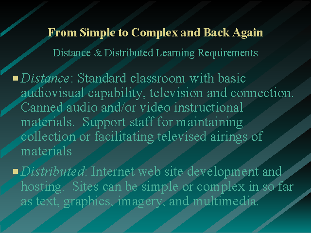

From Simple to Complex and Back Again
Slide 5 of 7

Go to slide:
1: The Virtual Learning Lab
2: Introduction
3: Key Words
4: Key Terms Continued
5: From Simple to Complex and Back Again
6: Facilitated Teaching and Learning
7: Hard and Software